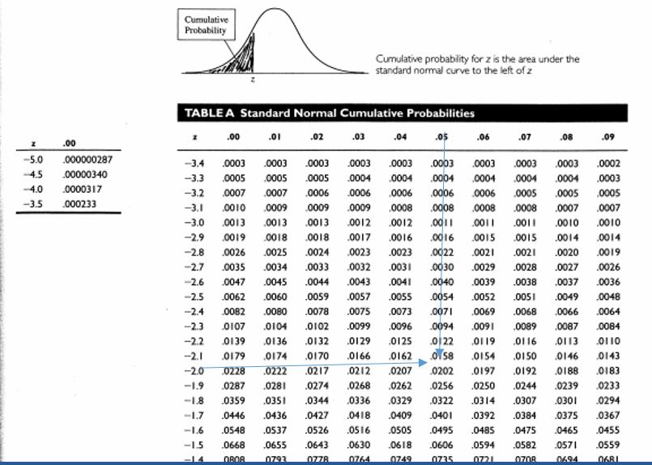
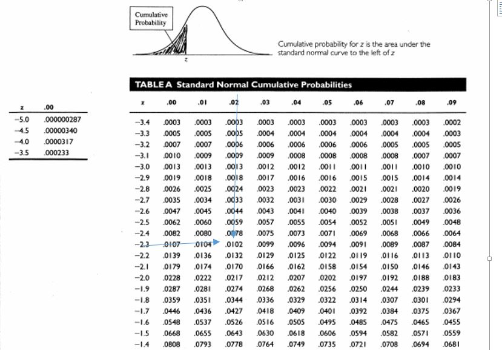
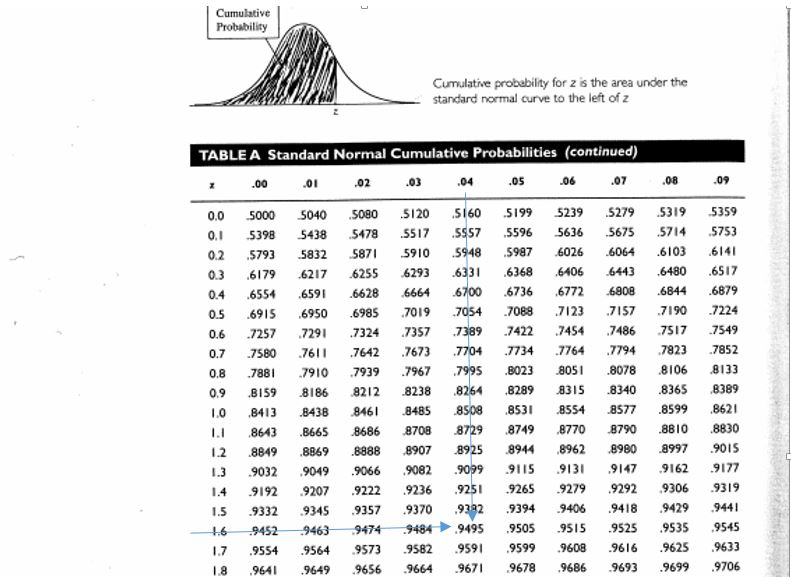
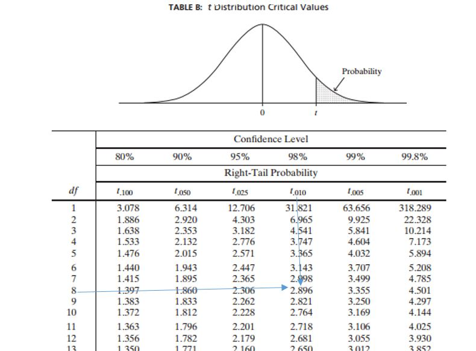
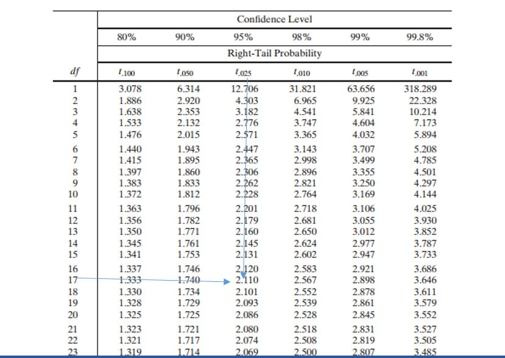
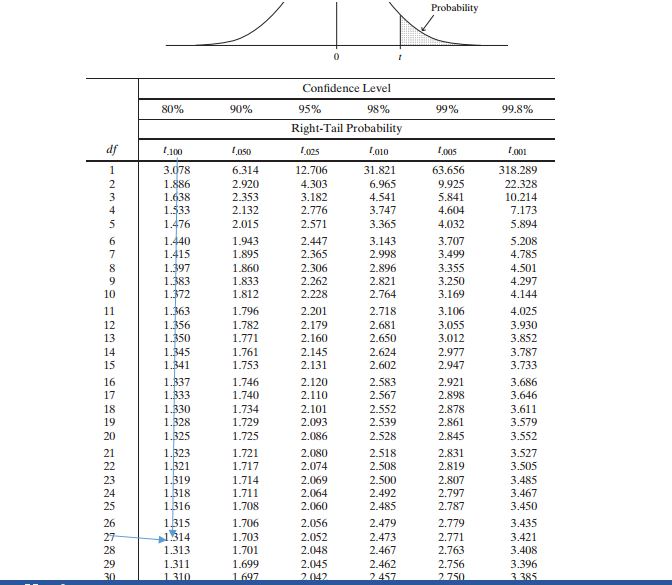

How to use normal distribution table to find critical value.
Firstly it is important that you download the table Here Then move on to make use of it. The Pdf you downloaded has two different normal distribution table in which one are labeled with negative numbers while the other is positive number. Now let make use of the negative one.
Example1.
What is the critical value when alpha is 5% assuming it is two tailed test.
Solution
Step1
Here $\alpha=5% =0.05$
$\alpha /2 = 0.05/2 =0.025$ (since it is two tailed test)
Step2
Now that we already know the important value go in to the table and look for wherever you have (0.025) or any number very closed to that.

Step3: As you can see above we see exactly the number we are looking for. Now match the row and column of the place where the number is located. Here if we go to the leftmost we can see (-1.9) and to the topmost we can see (0.06).
Step 4: we merge both numbers together and neglect the negative i.e 1.9 + 0.06 = 1.96
Hence the critical value is $\pm 1.96$.
Example1
What is the critical value of the question given in example1 assuming it is one tail test?
Solution
Step1: Here $\alpha=5% =0.05$ (no need to divide b 2 since it is one tailed test)
Step2:
Now that we already know the important value, go to the table and look for wherever you have (0.05) or any number very closed to that.

Step3: here we do not see the exact value (0.05), hence we will pick first number closest to it. Here we can pick either (0.0505) or (0.0495) but I prefer the first one. Now match the row and column of the place where the number is located. If we go to the leftmost we can see (-1.6) and to the topmost we can see (0.04).
Step 4: we merge both numbers together and neglect the negative i.e 1.6+ 0.04 = 1.64
Hence the critical value is 1.64.
Note: only one value is gotten for one tailed test while plus or minus is written for two tailed test.
Example2
What is the critical value of a normal distribution data given 98% as confidence level assuming you are doing left tail test??
Solution
Step1:
$CL=98% =0.98$
$\alpha =1-CL =1-0.98 =0.02$
Here alpha=0.02 (no need to divide b 2 since it is one tailed test)
Step2:
Now that we already know the important value, go to the table and look for wherever you have (0.02) or any number very closed to that.

Step3:
As you can see above we don’t see exact number we are looking for. So we are choosing the leftmost value between the two closed value of our target i.e. (0.0202 and 0.0197), so we choose 0.0202. Now match the row and column of the place where the number is found. Here if we go to the leftmost we can see (-2.0) and to the topmost we can see (0.05). Step 4:
we merge both numbers together and neglect the negative i.e. 2.0 + 0.05=2.05 Hence the critical value is -2.05. (Whenever you are given left tail our answer will be negative) Note: we would choose positive answer if the question has not told us that it is left tail.
Example3
What is the critical value of a normal distribution data given 98% as confidence level??
Solution
Step1:
$ CL=98% =0.98$
$\alpha =1-CL =1-0.98 =0.02$
Here alpha=0.02 /2 =0.01 (since the type of tail is not stated we will choose two tails)
Step2: Now that we already know the important value, go to the table and look for wherever you have (0.01) or an number very closed to that.

Step3: As you can see above we don’t see exact number we are looking for. So we are choosing the leftmost value between the two closed value of our target i.e. (0.0102 and 0.0099), so we choose 0.0102. Now match the row and column of the place where the number is found. Here if we go to the leftmost we can see (-2.3) and to the topmost we can see (0.02).
Step 4: we merge both numbers together and neglect the negative i.e 2.3 + 0.02=2.32
Hence the critical value is $\pm2.32$. (Remember two answers are gotten for 2tails)
B. another kind of Z-table will be used here it is label with positive value and the shaded region covered large percentage of the curve. If ou are going to be make use of this kind of table then ou will need one more step.
Example4
What is the critical value of a normal distribution data given 95% as confidence level provided it is one tail??
Solution
Step1 $CL=95% =0.98$
$\alpha =1-CL =1-0.95 =0.05$
Here $\alpha=0.05$
Step2
Now that we need to subtract the value needed to be checked from 1 i.e.
1-0.05=0.95
Now important value will be 0.95, go to the table and look for wherever you have (0.95) or any number very closed to that.

Step3: As you can see above we don’t see exact number we are looking for. So we are choosing the leftmost value between the two closed value of our target i.e. (0.9495 and 0.9505), so we choose 0.9495. Now match the row and column of the place where the number is found.
Here if we go to the leftmost we can see (1.6) and to the topmost we can see (0.04). Step 4: we merge both numbers together and neglect the negative i.e. 1.6 + 0.04=1.64 Hence the critical value is 1.64.
Example5
What is the critical value supposing Example5 is two tails??
Solution
Step1
$CL=98% =0.95$
$\alpha =1-CL =1-0.95 =0.05$
Here $\alpha=0.05 /2 =0.025$ (since It is two tails)
Step2
Now we need to subtract the value needed to be checked from 1 i.e. 1-0.025=0.975
Now important value will be 0.975, go to the table and look for wherever you have (0.975) or an number very closed to that.

Step3:
As you can see above we see the exact number we are looking for. S Now match the row and column of the place where the number is found. Here if we go to the leftmost we can see (1.9) and to the topmost we can see (0.06).
Step 4:
we merge both numbers together and neglect the negative i.e 1.9 + 0.06=1.96 Hence the critical value is $\pm1.96$
Example6
What is the critical value of a level of significant 2% for one tail test??
Solution
Step1
$CL=98% =0.98$
$\alpha =1-CL =1-0.98 =0.02$
Here $\alpha=0.02 =0.02$ (since It is two tails)
Step2
Now we need to subtract the value needed to be checked from 1 i.e 1-0.02=0.98
Now important value will be 0.98, go to the table and look for wherever you have (0.98) or any number very closed to that.

Step3 As you can see above we don’t see the exact number we are looking for. So, we are going to choose (0.9798) Now match the row and column of the place where the number is found. Here if we go to the leftmost we can see (2.0) and to the topmost we can see (0.05). Step4 we merge both numbers together and neglect the negative i.e. 2.0+ 0.05=2.05 Hence the critical value is 2.05.
Example7
What is the critical value of a level of significant 2% for 2 tail test??
Solution
Step1
$$\alpha =2%=.02$$
Here
$\alpha=0.02/2 =0.01$(since It is two tails)
Step2
Now we need to subtract the value needed to be checked from 1 i.e
1-0.01=0.99
Now important value will be 0.99, go to the table and look for wherever ou have (0.99) or an number ver closed to that.
Step3: As you can see above we don’t see the exact number we are looking for. So we will choose the best between (0.9798 and 0, 9901) so I select (0.9798) now match the row and column of the place where the number is found.
Here if we go to the leftmost we can see (2.3) and to the topmost we can see (0.02).
Step 4: we merge both numbers together i.e. 2.3+ 0.02=2.32
Hence the critical value is $\pm 2.32$
There is another Ztable ou can still come across, it will look like the following. Don't be suprise it is the same as the table use in example 1 to 4.the onl different is that it is right tail(positive) and the previous one is left tail(negative) the negative sign is what shows the difference Hence ou should follow the same step used in example1.
Summary
You can always check for critical value from any of the table if you observe well, when the shaded portion of the curve is small we are looking for small percentage but when it is large we look for large percentage. Also remember to remove the negative when you are using the first table. And remember to subtract from 1 before checking the second table. I believe you find this article helpful?. Consider to solve the following table.
Example8
Solution
Example9
Solution
How to check critical value from t-table.
firstly, you can't use table without knowing the sample size. why??well the sample size will be used to calculate the degree of freedom denoted b (df) in t table. ou can download your t-table herebefore moving to the example
Example1
what is the critical value of data with a sample size of 9 and a level of significance of 1% for 1 tail test?
Solution
Here $\alpha = 1% =0.01$
$n=9, df=n-1$
m
$df=9-1=8$
Now look for the 1% or 0.01 on the top of our table and 8 from the 'df' column. match it together as you can see below

As you can see the answer is 2.896, please don’t be deceived b 98% on the top, it is nothing that is written as a decimal is what Is important if ou have this kind of table with ou.
Example2
Assuming we decide to do two-tail test for example1 above what will be the critical value??
Solution
We would follow the same steps here too.
$\alpha = 1% $
$\alpha/2=1/2%=0.5% $
$\alpha/2 = 0.5/100=0.005 (to Decimal)$
$n=9, df=n-1$
$df=9-1=8$
Now look for the 0.5% or 0.005 on the top of our table and 8 from the 'df' column. Match it together as you can see below
Now it is ver clear that the result from the table is 3.355
Example3
what will be the critical value of sample of size 18 with confidence level of 95%??
Solution
CL=95% =0.95
$\alpha =1-CL= 1-0.95=0.05 $
$\alpha/2==0.05/2% $
$\alpha/2 = 0.5/100=0.025 (to Decimal)$
$n=9, df=n-1$
$df=18-1=17$
Now look for the 2.5% or 0.025 on the top of our table and 17 from 'df' column. Match it together as you can see below
Now it is very clear that the result from the table is 2.110
Example4
What will be the critical value of sample of size 28 with confidence level of 90% for one tail test??
Solution
CL=95% =0.90
$\alpha =1-CL= 1-0.90=0.1 $
\alpha= 0.1 (to Decimal)
$n=28, df =n-1$
$df=28-1=27$
Now look for the 10% or 0.1 on the top of our table and 27 from the 'df' column. Match it together as you can see below

Now it is very clear that the result from the table is 1.314 You should be able to check the critical value from the t-table by now. Try to click the next page to see some questions to test our understanding. Remember! You are free to chat me up on WhatsApp if you have anything to discuss with